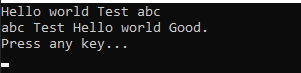

こんにちは。明月です。
この投稿はC#の関数(Method)とオーバーロード、再帰呼び出しに関する説明です。
以前の投稿までの例をみればMain関数(実行関数)でソースの上行から下行まで順番に実行されます。この形式で制御文だけでもプログラムを作成することができます。
でも、プログラムが複雑になるし、大きくなるとこの形式だけでは限界があります。
そのため、その長くなるソースを解決するために、関数(Method：メソッド)でソースを分割して作成することができます。
参考にプログラムの関数は数学の関数と同じ意味です。任意の元素(パラメータ)を代入して結果を返却してもらう数学の二項関係式です。
[アクセス修飾子] [返却データタイプ] 関数名 (パラメータ)
{
........
return 返却タイプ;
}
関数のパラメータにデータを入れると関数の中の演算をして返却データタイプにデータに合わせてデータを返却してもらいます。
using System;
namespace Example
{
class Program
{
// ExecuteMethod1関数
private static int ExecuteMethod1(int a)
{
// パラメータからaの値を受け取ると10を掛けて返却する。
return a * 10;
}
// ExecuteMethod2関数(返却データタイプがvoidの場合は返却値がない。)
private static void ExecuteMethod2(int a)
{
// パラメータからaの値を受け取るとコンソールに出力
Console.WriteLine(a);
}
// 実行関数
static void Main(string[] args)
{
// 変数宣言
int a = 5;
// ExecuteMethod1関数呼び出す。
// パラメータに5を入れると50の値が返却する。retの変数に格納する。
int ret = ExecuteMethod1(a);
// コンソールに出力
Console.WriteLine(ret);
// ExecuteMethod2関数呼び出す。
// 関数の中でコンソールに出力
ExecuteMethod2(a);
// 任意のキーを押してください
Console.WriteLine("Press any key");
Console.ReadLine();
}
}
}
上のソースでExecuteMethod1関数とExecuteMethod2関数を作成しました。
関数の前にあるキーワードでprivateはアクセス修飾子です。staticは静的タイプに設定するキーワードですが、そのことについては別の投稿で説明します。
また、データタイプを設定しますが、intの場合は関数から整数のデータタイプの値が返却するという意味です。
なので、関数の中では必ずreturnキーワードを作成しなければならないし、returnデータタイプは必ずintタイプで返却しなければならないです。
voidの場合は返却がないという意味のデータタイプで関数の中でreturnキーワードでデータを返却する必要がないです。(返却データタープがvoidの場合、returnを使うとreturnキーワードがあるところで関数を終了します。)
パラメータはintタイプで受け取ります。パラメータの場合は関数により必須項目ではなく、パラメータが無いことで関数を作成することができます。
Main関数(実行関数)でExecuteMethod1関数とExecuteMethod2関数を呼び出しました。
まず、ExecuteMethod1関数からはintタイプのパラメータを要求するので、intタイプの変数のaを渡します。a変数で5の値があるのでExecuteMethod1関数を通ると5掛けて10になり、返却データは50になります。
ret変数にはxecuteMethod1関数の返却値を格納するので、50のデータがあります。
ExecuteMethod2関数にはret変数の値を渡して関数の中でコンソールに出力します。
関数をもっと複雑に使いましょう。
using System;
namespace Example
{
class Program
{
// ExecuteMethod1関数
// パラメータaを参照して結果を共有できる。
private static int ExecuteMethod1(ref int a, int b)
{
// bの値に10を掛ける。
b *= 10;
// aの値に100を掛ける。
a *= 100;
// 결과 리턴
return b;
}
// ExecuteMethod2関数
// 関数ないの結果をパラメータに取り出す。
private static void ExecuteMethod2(out int a)
{
a = 123;
}
// 実行関数
static void Main(string[] args)
{
// 変数宣言
int a = 5;
int b = 10;
// ExecuteMethod1関数を呼び出す。パラメータが参照タイプ(ref)なので明示する。
int ret = ExecuteMethod1(ref a, b);
// ExecuteMethod1の返却値 = 50 , コンソールに出力
Console.WriteLine("ExecuteMethod1 return = {0}", ret);
// コンソールに出力
Console.WriteLine("a = {0}", a);
Console.WriteLine("b = {0}", b);
// ExecuteMethod2関数を呼び出す。パラメータが出力タイプ(out)なので明示する。
ExecuteMethod2(out b);
// コンソールに出力
Console.WriteLine("b = {0}", b);
// 任意のキーを押してください
Console.WriteLine("Press any key");
Console.ReadLine();
}
}
}
パラメータでrefとoutというキーワードがあります。refの場合は関数の中で外部の変数を使う意味です。
つまり、関数の中でrefのパラメータのa変数を変更するとMain関数から参照したデータを変更します。その意味では関数の中でパラメータから受け取ったデータ(refが無いパラメータ)は変更しても関数の外部のデータは影響がありません。
結果みるとbのデータを変更してもMain関数のb変数は5です。
データ返却が一つではなくて、何個になる時もあります。
つまり、基本返却はreturnを使って返却しますが、パラメータによる返却する方法もあります。
outキーワードは関数の中でデータを関数に外部に返却することです。
ExecuteMethod2関数は返却値はvoidデータがパラメータでoutキーワードがあるのでbの変数が123に設定します。
上の例はパラメータが一つ、二つに決まっていますが、入力個数が決まってない場合もあります。
using System;
namespace Example
{
class Program
{
// ExecuteMethod関数
// paramsキーワードを使うとパラメータは可変に設定する。
private static void ExecuteMethod(params string[] args)
{
// 可変パラメータは配列の値に設定される。
foreach (string arg in args)
{
// コンソールに出力
Console.Write("{0} ", arg);
}
// 改行
Console.WriteLine();
}
// 実行関数
static void Main(string[] args)
{
// 変数宣言
string a = "Hello world";
string b = "Test";
string c = "abc";
// ExecuteMethod関数呼び出す。
// パラメータa、 b、 c (3個)
ExecuteMethod(a, b, c);
// ExecuteMethod関数呼び出す。
// パラメータc、 b、 a、 "Good." (4個)
ExecuteMethod(c, b, a, "Good.");
// 任意のキーを押してください
Console.WriteLine("Press any key...");
Console.ReadLine();
}
}
}

paramsキーワードはパラメータ個数は可変に設定することができます。可変パラメータとはパラメータ個数が決まってないという意味です。
つまり、ExecuteMethod関数のパラメータに3個を入れることも、4個を入れることもできます。
ExecuteMethod関数の中では可変パラメータを配列で受け取ります。
関数の中で自分自身を呼び出すこともできます。
using System;
namespace Example
{
class Program
{
// ExecuteMethod関数
private static int ExecuteMethod(int a)
{
// aが1より大きいなら
if (a > 1)
{
return a * ExecuteMethod(a - 1);
}
else
{
// aより小さいなら1を返却する。
return 1;
}
}
// 実行関数
static void Main(string[] args)
{
// ExecuteMethod(5)の値は？
Console.WriteLine(ExecuteMethod(5));
// 任意のキーを押してください
Console.WriteLine("Press any key...");
Console.ReadLine();
}
}
}
上の例はExecuteMethod関数でExecuteMethod関数を呼び出します。関数で自分自身を呼び出すのを再帰呼び出しといいます。
関数の再帰は数学的の再帰と同じ意味です。つまり、上のコードは数学で「f(x) = x * f(x-1) ※ただし、xは0より大きい」という意味です。
Main関数でExecuteMethodを呼び出す時に最初に5のデータを入れるので「f(5) = 5 * f(4)」になり、すべての解けると「5 * 4 * 3 * 2 * 1 = 120」になりますね。すなわち、階乗です。
C#はオブジェクト指向プログラミング(OOP)の言語です。このOOPはクラスと関係があることですが、クラスの関数を作成する時に多相化(ポリモーフィズム)ということがあります。
多相化(ポリモーフィズム)は同じ返却データタイプと関数名が同じでも、パラメータ個数が違いなら別の関数で認識することです。(もちろん、パラメータ個数とタイプまで同じならエラーに発生します。)
using System;
namespace Example
{
class Program
{
// ExecuteMethod関数
private static void ExecuteMethod(int a)
{
// コンソールに出力
Console.WriteLine("ExecuteMethod - int - " + a);
}
// ExecuteMethod関数
private static void ExecuteMethod(string a)
{
// コンソールに出力
Console.WriteLine("ExecuteMethod - string - " + a);
}
// 실행 함수
static void Main(string[] args)
{
// ExecuteMethodのパラメータがintのデータの関数を呼び出す。
ExecuteMethod(1);
// ExecuteMethodのパラメータがstringのデータの関数を呼び出す。
ExecuteMethod("hello world");
// 任意のキーを押してください
Console.WriteLine("Press any key...");
Console.ReadLine();
}
}
}
OOPの多相化(ポリモーフィズム)が重要だと言ってもすごく難しい概念ではありません。
上の例をみればExecuteMethod関数が二つあります。もちろんデータタイプと同じです。
でも、始めのExecuteMethod関数はintタイプを受け取るし二つめはStringタイプを受け取ります。
つまり、Main関数では入れるデータタイプにより呼び出す関数が違います。
ここまでC#の関数(Method)とオーバーロード、再帰呼び出しに関する説明でした。
ご不明なところや間違いところがあればコメントしてください。
- [C#] static2019/07/10 00:19:18
- [C#] クラス(class)とコンストラクタ、そしてnew(割り当て)2019/07/10 00:06:17
- [C#] プロパティ(property)2019/07/08 23:04:09
- [C#] アクセス修飾子(public, private, protected)2019/07/08 22:55:00
- [C#] メソッド(関数)とvoid型2019/07/07 23:12:30
- [C#] 制御文 - ループ分岐(break, continue)2019/07/07 22:54:13
- [C#] 制御文 - ループ(for, while, do〜while, foreach)2019/07/06 00:53:17
- [C#] 9. 関数(Method)とオーバーロード、再帰呼び出し2019/07/06 00:38:29
- [C#] 8. 配列とリスト2019/07/05 00:12:42
- [C#] 7. 制御文2019/07/05 00:05:30
- [C#] 6. 演算子2019/07/04 00:09:43
- [C#] 5. データタイプ変換(キャスト:Cast)とコメント(Comment)2019/07/04 00:01:12
- [C#] 4. データタイプとリテラル(literal)、 Nullable2019/07/02 23:58:43
- [C#] 3. プログラミングの始めと変数と定数を使う方法2019/07/02 23:46:49
- [C#] 2. Visual Studioをインストールする方法2019/07/01 23:58:20
- [Java] 56. Web serviceのサーブレット(Servlet)で初期化作業(properties設定)2021/07/02 17:10:36
- [Java] 55. Spring frameworkに文字化けを解決する方法(Encoding設定)2021/06/30 16:37:16
- [Java] 54. Spring frameworkでWeb filterを使う方法2021/06/29 18:25:12
- [Java] 53. ウェブサービス(Web service)でエラーページを処理する方法2021/06/25 13:35:54
- [Design pattern] 1-3. ファクトリメソッドパターン(Factory method pattern)2021/06/23 19:45:37
- [Java] WebSocketでチャット履歴をローディングする方法2021/06/15 18:34:45
- [Java] WebSocketを利用してユーザ(サイト運用者)が他のユーザとチャットする方法2021/06/15 17:20:08
- [Design pattern] 1-2. ビルダーパターン(Builder pattern)2021/06/11 19:06:28
- [Design pattern] 1-1. シングルトンパターン(Singleton pattern)2021/06/09 19:40:05
- [Design Pattern] デザインパターンの紹介2021/06/08 20:42:36
- [Tools] Dbeaver(無料Sql queryブラウザツール)2021/04/28 18:26:49
- [Bootstrap] HTMLデザインのフレームワークのBootstrap紹介2020/07/30 19:06:36
- [Python] メール(smtplib)を送信する方法2020/07/27 18:38:43
- [Python] HttpConnection(requestsモジュール)でウェブサーバーで接続する方法2020/07/20 14:41:51
- [Python] Excel(openpyxl)を扱う方法2020/07/16 16:40:31